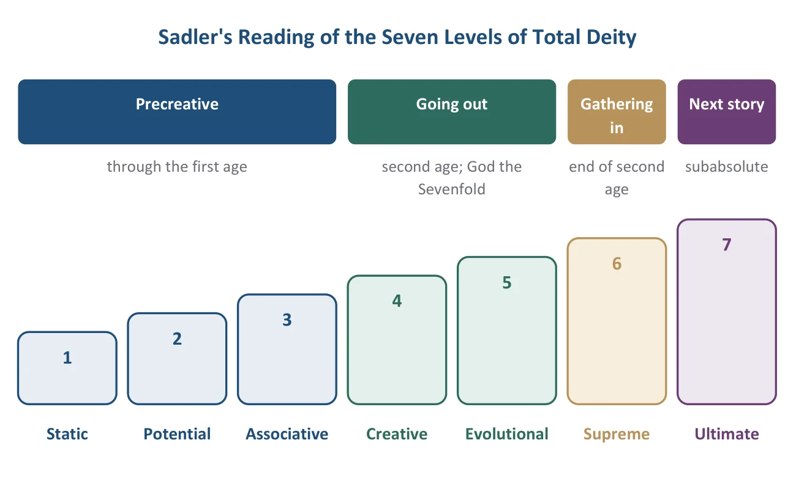

La première synthèse : Dieu le Suprême
Original : L’Histoire finie, chapitre III, Première synthèse : Dieu le Suprême (pp. 48–55)
DANS CE CHAPITRE
À la fin du deuxième âge, la lumière et la vie sont établies dans tous les sept superunivers, et l’Être Suprême émerge pour gouverner expérientiellement les superunivers parachevés. Sadler y voit la première synthèse, qui lie ensemble la perfection de Havona (thèse) et les superunivers parachevés (antithèse). Il trouve le même genre de synthèse dans la trinitisation de finalitaires avec des natifs de Havona, dans la convergence des cultures des sept superunivers et dans l’association du Fils Créateur et de l’Esprit Créatif. Une grande partie de la seconde moitié du chapitre est un raisonnement de Sadler sur un avenir qui n’a pas été révélé.
1. Un temps de quiétude entre les âges (orig., pp. 48–49)
Une promesse au sujet des temps verbaux
Dans ce chapitre, l’étude de Sadler s’avance dans l’avenir du temps. Il promet donc de parler au présent des évènements de la période propre à chaque chapitre, au passé de ceux des chapitres antérieurs et au futur de ceux des chapitres ultérieurs. Ce commentaire suit en général la même pratique.
L’hypothèse d’un temps de quiétude
De même qu’il existe une « zone de quiétude » entre des niveaux d’espace adjacents, Sadler suppose qu’il peut aussi exister un « temps de quiétude » entre des âges de l’univers. Le Livre d’Urantia ne le dit pas directement ; c’est une analogie de Sadler, qui raisonne de la structure de l’espace à la structure du temps. Cette hypothèse lui permet de considérer pour elle-même la réalisation complète de la destinée évolutionnaire à la fin du deuxième âge, sans avoir à traiter en même temps des évènements liés à la phase d’ouverture de l’âge suivant.
Pendant ce temps de quiétude, le grand univers jouit d’une croissance achevée, la satisfaction d’une destinée atteinte. Le long et dur labeur de l’évolution a enfin remporté sa victoire expérientielle. Les Créateurs Suprêmes ont répondu au défi de perfection de Havona ; le résultat en est sept-cent-mille univers locaux parachevés, couronnés par l’établissement de la lumière et de la vie dans tous les sept superunivers.
Sadler compare la création spatio-temporelle de cette période à une barque qui a rentré ses rames et se repose. Pendant le temps de quiétude, le grand univers devient, comme le Havona du premier âge, une création contenue en elle-même : jouissant de la satisfaction au lieu du labeur, consolidant ce qu’il a accompli et achevant son unification sous la souveraineté de l’Être Suprême nouvellement émergé.
2. L’émergence de l’Être Suprême (orig., pp. 49–50)
Un Dieu dont on peut s’approcher
Ce qui porte le deuxième âge au sommet de la croissance finie est l’émergence finale de l’Être Suprême comme gouvernant expérientiel des superunivers parachevés. Une Déité jusque-là inaccessible devient une Déité avec laquelle chaque créature peut entrer en contact. Dieu le Père, étant infini, restera toujours un mystère, mais Dieu le Suprême, étant fini, peut être compris par des créatures finies. Puisque toutes les créatures finies ont évolué ensemble en lui, cette parenté expérientielle devient la base d’une compréhension mutuelle.
La réalité cosmique, que l’on désigne diversement sous les noms d’Être Suprême, de Dieu le Suprême et du Tout-Puissant Suprême, est la synthèse complexe et universelle des phases émergentes de toutes les réalités finies.117:3.1
Le niveau suprême : de la sortie au rassemblement
Sadler en vient ici au sixième niveau sur lequel fonctionne la Déité totale, le niveau suprême. Il répartit les niveaux en trois groupes. Les niveaux statique, potentiel et associatif sont antérieurs à la création ; ce sont les niveaux sur lesquels la Déité s’est préparée à l’aventure de sortir dans le temps et l’espace. Les niveaux créatif et évolutionnaire sont des niveaux de « sortie », sur lesquels la Déité se distribue dans toute la création et s’identifie aux créatures par l’habitation des Ajusteurs. Leur activité se voit le plus clairement dans le ministère de Dieu le Septuple.
6. Suprême — Déité expérientielle d’elle-même et unifiant la créature avec le Créateur.0:1.9
Maintenant, sur le sixième niveau, Sadler voit une « rentrée ». Ce qui a été répandu à travers toute la création est de nouveau rassemblé. Le Suprême représente la première grande synthèse, l’union de la thèse de perfection et de l’antithèse d’imperfection ; et l’antithèse est ici une imperfection qui a atteint le statut parachevé par la croissance évolutionnaire. Sur ce niveau, même la Déité est expérientielle. Comme le montre la nature des Fils d’effusion du Paradis, sur ce niveau Dieu et l’homme peuvent devenir un.

Une image tirée de la respiration aide à le saisir. Si la Déité a inspiré jusqu’au premier âge et, tout au long du second, a pour ainsi dire expiré, se donnant à toute la création, alors le niveau suprême est le moment où elle inspire de nouveau. Pourtant, le souffle inspiré n’est pas le même que le souffle expiré : il porte maintenant l’expérience d’innombrables créatures.
3. Une synthèse au niveau des créatures (orig., p. 51)
L’union du parfait et du rendu parfait
Les évènements du lointain avenir sont difficiles à se représenter, mais Sadler montre que le même type de synthèse se produit déjà chez certaines créatures. Havona fournit la thèse originelle, la perfection ; l’imperfection des superunivers est l’antithèse ; et cette imperfection peut devenir parfaite par la croissance évolutionnaire. Existe-t-il donc, au niveau des créatures, une synthèse du rendu parfait et du parfait ?
Sadler donne comme exemple l’union trinitisante de finalitaires avec des natifs de Havona.
Les Sept Maitres Esprits ont autorité pour sanctionner l’union trinitisante de finalitaires et de personnalités du Paradis-Havona, et ces liaisons mixtes sont toujours couronnées de succès.22:7.10
Sadler nous invite à imaginer une scène. Un être pourrait-il être plus éloigné d’un natif de Havona qu’un habitant des cavernes mal lavé d’une planète primitive ? Pourtant, un tel être, habité par un Ajusteur, peut survivre, être reçu dans le Corps de la Finalité puis, comme finalitaire, s’unir à un natif de Havona dans l’aventure de la trinitisation. C’est, au sens tout à fait littéral, une synthèse du rendu parfait et du parfait.
En réalité, les créatures parfaites et les créatures rendues parfaites sont toutes deux incomplètes par rapport à la totalité finie.32:3.12
Même ainsi, une différence demeure entre la perfection éternelle et la perfection conquise par l’expérience. Selon le contraste spirituel de Sadler, le natif de Havona suppose que les choses ont toujours bien marché, tandis que l’ascendeur sait que les choses marchent bien parce que nous avons appris les lois, et qu’autrefois elles ne marchaient pas bien du tout. L’un le tient pour acquis ; l’autre en est reconnaissant.
4. Le grand univers achevé : divergence et convergence (orig., pp. 50–52)
Les sept natures des Sept Maitres Esprits
Tout au long du deuxième âge, chaque superunivers s’est développé séparément sous l’influence distinctive d’un Maitre Esprit. Puisque les Sept Maitres Esprits personnalisent les sept combinaisons possibles des trois Déités, chacun diffère en nature. Sadler le symbolise par trois cercles qui se chevauchent : trois régions qui ne se recouvrent pas, trois où deux cercles se recouvrent et une où les trois se recouvrent, soit sept régions en tout.
| Maitre Esprit | Combinaison | Région dans la figure aux trois cercles |
|---|---|---|
| Numéro Un | Père | Région sans recouvrement |
| Numéro Deux | Fils | Région sans recouvrement |
| Numéro Trois | Esprit | Région sans recouvrement |
| Numéro Quatre | Père-Fils | Région où deux cercles se recouvrent |
| Numéro Cinq | Père-Esprit | Région où deux cercles se recouvrent |
| Numéro Six | Fils-Esprit | Région où deux cercles se recouvrent |
| Numéro Sept | Père-Fils-Esprit | Centre où les trois cercles se recouvrent |
Le Maitre Esprit Numéro Sept, qui préside Orvonton, le septième superunivers auquel nous appartenons, est une union équilibrée des caractéristiques des trois Déités [34:2.6]. C’est la source de l’attente exprimée par le Livre d’Urantia selon laquelle Orvonton, bien que plus lent à se développer que les autres superunivers, deviendra finalement une création bien équilibrée.
Se séparer et se rassembler
Chaque Maitre Esprit pénètre et domine tout l’environnement d’un superunivers. Chaque superunivers et ses êtres natifs sont donc aussi distinctifs, portant à jamais la nature et le caractère individuels du Maitre Esprit qui les supervise. Sadler s’attend à ce que chaque superunivers tende vers sa propre culture, sa propre « civilisation ».
Lorsque l’Être Suprême émerge comme souverain de tous les superunivers, les barrières qui ont séparé les supercréations sont levées et, pour la première fois, les sept superunivers fonctionnent comme un seul ensemble administratif et culturel. Sadler prévoit que le mélange de sept cultures donnera un nouvel élan à la croissance, et il appelle cela le principe de « divergence et convergence ». La croissance devient d’abord distinctive par la divergence ; puis, quand le temps est mûr, ce qui s’est développé isolément est rassemblé et consolidé en un tout.
Sadler note que cela correspond au développement d’un monde habité ordinaire. Les races évolutionnaires se séparent d’abord et cultivent leurs propres cultures, puis se fondent plus tard en une seule grâce aux peuples adamiques et à la civilisation édénique. Pour emprunter une image à l’orchestre : après une longue saison où sept instruments répètent séparément, le jour vient enfin où ils jouent ensemble un même morceau.
5. Les unions créatives de la Déité Duelle (orig., pp. 52–53)
L’association centrale de chaque âge
Au-delà de la divergence et de la convergence, Sadler discerne un principe de plus : dans un âge donné de l’univers, une union créative particulière de la Déité Duelle semble avoir une importance spéciale.
Au premier âge, l’union significative de la Déité Duelle était celle du Père et du Fils. L’union du Père et du Fils a trinitisé l’Esprit Infini et éternisé l’univers central parfait. Au deuxième âge, l’union de la Déité Duelle qui compte le plus semble être l’association du Fils et de l’Esprit. Le Livre d’Urantia décrit cette relation de la manière suivante.
Dans toutes les créations subséquentes, l’Esprit entretient les mêmes relations avec le Fils que le Fils avec le Père dans la première création centrale.8:3.3
Sadler estime toutefois que cette association active du Fils et de l’Esprit semble s’exercer moins au Paradis que dans les univers locaux, dans l’œuvre conjointe du Fils Créateur et de l’Esprit Créatif. Ce sont eux qui créent, organisent et parachèvent les royaumes évolutionnaires. Une question se pose donc. Si le résultat de l’union Père-Fils a été l’apparition de l’Esprit Infini et de Havona, quel sera le résultat final lorsque les sept-cent-mille associations Fils-Esprit dans le temps et l’espace seront achevées ?
Évènements existentiels et évènements expérientiels
Sadler met côte à côte les unions des deux âges. L’union du Père et du Fils est de nature existentielle, un évènement éternel au Paradis. Les unions du Fils et de l’Esprit sont de nature expérientielle, des évènements temporels au loin dans l’espace. Sadler ne pense pas qu’au Paradis même le Fils Éternel et l’Esprit Infini forment une nouvelle association. Le Fils et l’Esprit du Paradis sont plutôt associés par l’intermédiaire de la personne de leurs Fils d’Univers et de leurs Esprits d’Univers.
Sadler pousse ensuite le raisonnement un pas plus loin. Une fois la lumière et la vie établies dans chaque univers local, propose-t-il, les sept-cent-mille Fils d’Univers et Esprits d’Univers pourraient entrer dans des unions trinitisantes. Puisque ce n’est qu’à la toute fin du deuxième âge que les univers locaux atteignent un statut comparable (de manière finie) à la perfection de la création centrale, il s’attend à ce que la contrepartie de la trinitisation qui a ouvert le premier âge ne se produise qu’à ce moment-là. C’est une audacieuse conjecture de Sadler, sans fondement dans le Livre d’Urantia.

6. Le Fils et l’Esprit au deuxième âge (orig., pp. 53–55)
L’évolution du Fils Créateur : croitre comme personne
Si l’on remonte à l’Âge Zéro, le Fils Éternel était pleinement personnel avant même Havona. Sadler estime qu’il en est de même d’un Fils Créateur. Un Fils Créateur est entièrement personnel avant même que son univers local n’ait commencé, et bien avant qu’il ne soit ancré dans la lumière et la vie. Toute la croissance évolutionnaire de Micaël, y compris son expérience et sa formation avant de devenir créateur, a donc lieu en tant qu’être personnel.
Le Fils Créateur septuple, le Micaël Maitre, est expérientiellement bien plus grand qu’il ne l’était lors de sa première apparition au Paradis, nouvellement né du Père Universel et du Fils Éternel. Il a fait beaucoup d’expériences en organisant et en parachevant son univers local et, par ses sept effusions à la similitude des créatures, il a ajouté à sa nature beaucoup de choses que sa dotation originelle de divinité du Paradis ne contenait pas.
Sadler lit cela à travers le cadre de la thèse, de l’antithèse et de la synthèse. Le Micaël Maitre personnalise toujours la « thèse » de la divinité originelle conçue conjointement par le Père et le Fils, tout en y ajoutant une nature expérientielle, l’« antithèse », tirée de l’imperfection de la création spatio-temporelle. De même que Jésus de Nazareth vit toujours en Micaël de Nébadon, la nature de la créature est présente dans sa nature. En synthétisant personnellement ces qualités opposées, suggère Sadler, le Micaël Maitre en vient à ressembler à la divinité expérientielle de l’Être Suprême et à l’exprimer.
Toutefois, en observant leurs activités dans le présent âge de l’univers, nous ne détectons aucune action qui soit plus que finie21:6.1
L’évolution de l’Esprit Créatif : atteindre la personnalité
Sadler voit l’Esprit Créatif croitre par un chemin différent. À l’Âge Zéro, l’Esprit Infini n’était pas encore une personne, et il a atteint le statut de personnalité en fonctionnant comme cocréateur dans l’actualisation de Havona ; c’est l’interprétation que Sadler a établie dans son prologue. Il estime que l’Esprit Créatif atteint le statut de personnalité de la même manière, en œuvrant comme cocréateur au parachèvement d’un univers local.
La comparaison de Sadler se présente ainsi. De même que l’Esprit Infini a atteint le statut de personnalité dans un évènement de l’éternité, simultané à l’apparition de Havona, de même l’Esprit Créatif atteint le statut de personnalité dans un évènement du temps, lorsque son univers local est ancré dans la lumière et la vie. Un être créatif en vient à ressembler à l’univers qu’il fait, et il atteint le statut de personnalité au cours de ce travail. S’il en est ainsi, l’expérience initiale d’un Esprit Créatif serait celle d’un être prépersonnel, très différente de la croissance d’un Fils Créateur, qui est une personne dès le commencement.
Les six phases de l’Esprit Créatif dans le Livre d’Urantia
Ce passage de Sadler doit être lu en regard du texte. Le Livre d’Urantia décrit la carrière de l’Esprit-Mère d’univers local en six phases [17:6.2] : la différentiation initiale au Paradis, l’éducation préliminaire dans l’art de créer, le stade de création physique, la création de la vie, les âges postérieurs à l’effusion et les âges de lumière et de vie. Or, dès la quatrième phase, il y a au Paradis une cérémonie de « personnalisation » [17:6.7] ; l’Esprit Créatif ne confère le mental qu’après avoir reçu des prérogatives personnelles [34:4.8] ; et, dans la cinquième phase, elle est élevée à la cosouveraineté [17:6.8]. L’affirmation de Sadler selon laquelle elle n’atteint le statut de personnalité que lorsque l’univers est ancré dans la lumière et la vie ne correspond donc pas au texte tel qu’il est. Il pensait probablement à la pleine réalisation expérientielle de la personnalité.
Une fois que l’ère de lumière et de vie est établie, le cosouverain de l’univers local entre dans la sixième phase de la carrière des Esprits Créatifs.17:6.9
Sadler dit que cette sixième phase semble être la limite présente de la croissance d’un Esprit Créatif. Un Esprit ainsi mûri est expérientiellement très différent de son homologue de la première phase, qui venait à peine d’être différencié dans l’Esprit Infini lorsque naquit son futur partenaire, le Fils Créateur. En résumé, un Fils d’Univers, en croissant, joint à sa divinité native du Paradis la nature expérientielle des créatures de l’espace-temps. Un Esprit de l’Univers, en croissant, acquiert l’expérience d’atteindre la personnalité dans le temps : ce qui fut d’abord focalisé comme un nouvel Esprit Créatif, une présence distincte de l’Esprit Infini, devient personnel.
| Aspect | Fils Créateur (Fils d’Univers) | Esprit Créatif (Esprit de l’Univers) |
|---|---|---|
| Prototype du premier âge | Le Fils Éternel, une personne avant même Havona | L’Esprit Infini, qui a atteint la personnalité avec Havona (interprétation de Sadler) |
| Point de départ | Pleinement personnel dès le commencement | Une focalisation au sein de l’Esprit Infini |
| Contenu de la croissance | Ajoute la nature de créature par l’expérience (sept effusions) | Réalise une personnalité expérientielle dans le temps |
| Aboutissement | Souverain septuple, le Micaël Maitre | La sixième phase (âges de lumière et de vie) |
Parce que les deux sortes de croissance sont si différentes, elles se complètent d’autant mieux. Sadler croit que, prises ensemble, elles engloberaient toute la croissance qu’un être créatif peut réaliser au deuxième âge de l’univers.
L’union Fils-Esprit et le Créateur Associé
Depuis que le Père et le Fils se sont unis pour trinitiser l’Acteur Conjoint, aucun couple de créateurs n’a produit un troisième être qui leur soit égal en nature créative et en attributs de créateur. Sadler pense que l’union trinitisante d’un Fils d’Univers et d’un Esprit de l’Univers doit attendre que le deuxième âge soit presque terminé, ou peut-être que le troisième commence. Elle ne se produira pas, selon lui, avant que tous les sept-cent-mille univers locaux soient ancrés dans la lumière et la vie.
Lorsqu’une telle union se produit, l’union de la Déité Duelle se transforme en une relation trine : deux deviennent trois. Sadler appelle le troisième être coordonné qui surgirait ainsi le « Créateur Associé » et nomme l’union triple le « Trio Créatif Fils-Esprit ». Selon Sadler, ce Créateur Associé exprimerait cinq choses :
- la divinité originelle du Paradis reçue par le Fils Créateur et l’Esprit Créatif
- l’expérience du Fils d’Univers et de l’Esprit de l’Univers dans l’organisation et le parachèvement d’un univers local
- la nature expérientielle de créature que le Fils Créateur a acquise au cours de ses sept effusions
- le statut expérientiel de personnalité que l’Esprit Créatif a acquis dans le temps en tant que créateur coopérant
- le résultat « superadditif » de l’union du Fils Créateur et de l’Esprit Créatif
Pour la formulation du dernier point, Sadler emprunte la description que le Livre d’Urantia donne de la personnalité de l’Esprit Infini.
La personnalité de la Source-Centre Troisième est la conséquence surajoutée de l’union entre la personnalité-Père libérée et la personnalité-Fils absolue.10:2.5
Sadler suggère aussi qu’un tel troisième être pourrait, comme l’Esprit Infini, être subordonné en souveraineté et pourtant le plus doué de talents variés dans l’action. C’est là aussi un langage que le Livre d’Urantia emploie à l’origine au sujet de l’Esprit Infini.
un être provisoirement subordonné en souveraineté, mais par bien des côtés apparemment le plus doué de talents variés dans l’action.9:1.7
Sadler prédit que ce Créateur Associé pourrait révéler une nature suprême-ultime et que les Trios Créatifs Fils-Esprit joueront un rôle important dans l’ouverture du niveau d’espace primaire et le développement des univers de l’espace extérieur. La symétrie est la suivante : de même que l’Esprit Infini, né de l’union Père-Fils, est devenu le partenaire de toute la création après Havona, de même le troisième être de l’union Fils-Esprit deviendrait le partenaire dans la création de l’espace extérieur. C’est une belle symétrie, mais le Livre d’Urantia n’a jamais révélé un tel être. C’est une conjecture que Sadler pose comme un pont vers l’histoire du subabsolu.
Points clés
- À la fin du deuxième âge, la lumière et la vie sont établies dans tous les sept-cent-mille univers locaux et dans tous les sept superunivers, et Sadler suppose un « temps de quiétude » entre les âges.
- L’Être Suprême émerge pour gouverner expérientiellement les superunivers parachevés et, étant fini, devient un Dieu dont les créatures finies peuvent s’approcher et qu’elles peuvent comprendre.
- Sadler lit les niveaux de la Déité totale comme antérieurs à la création (statique, potentiel, associatif), de sortie (créatif, évolutionnaire) et de rassemblement (suprême).
- La trinitisation de finalitaires avec des natifs de Havona est un exemple, au niveau des créatures, de la synthèse du rendu parfait et du parfait.
- Les cultures superuniverselles qui ont grandi séparément sous les sept natures des Sept Maitres Esprits sont rassemblées sous la souveraineté du Suprême. C’est le principe de divergence et convergence.
- Si l’association centrale du premier âge était Père-Fils, celle du deuxième âge est Fils-Esprit, réalisée par les Fils Créateurs et les Esprits Créatifs des univers locaux.
- Le Fils Créateur croît comme personne en ajoutant la nature de créature ; l’Esprit Créatif croît en réalisant une personnalité expérientielle dans le temps. Le récit de Sadler sur le moment où l’Esprit Créatif atteint la personnalité doit être lu en regard du texte.
- Le Trio Créatif Fils-Esprit et le Créateur Associé sont des conjectures de Sadler au sujet d’un avenir non révélé.